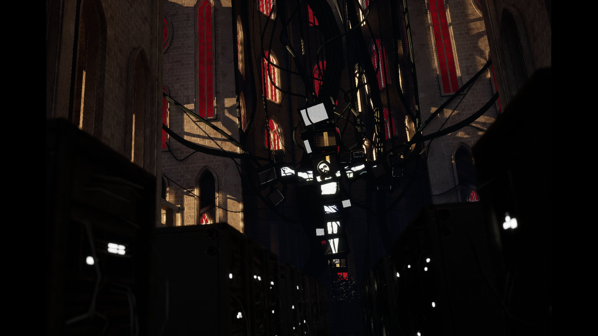
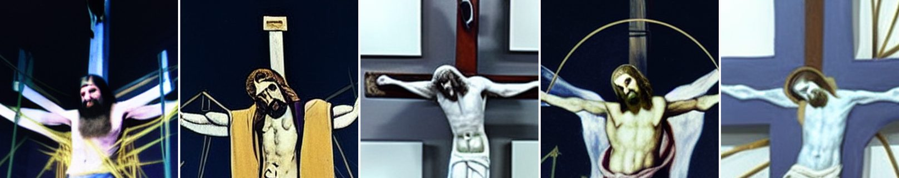
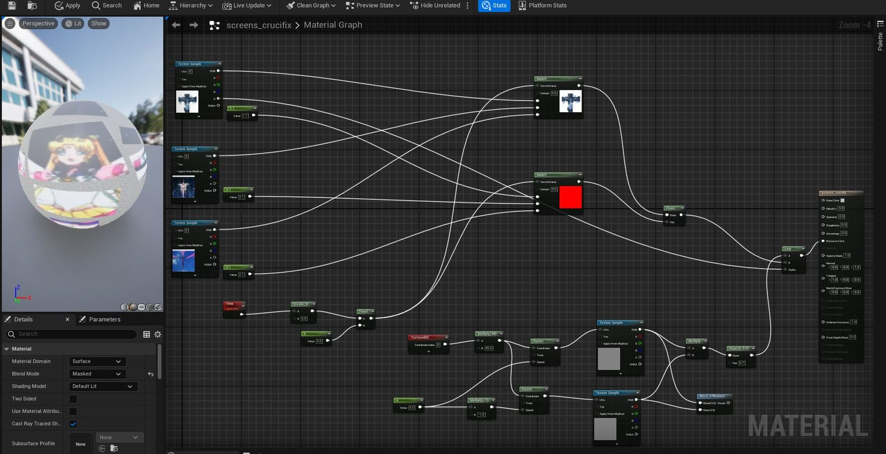
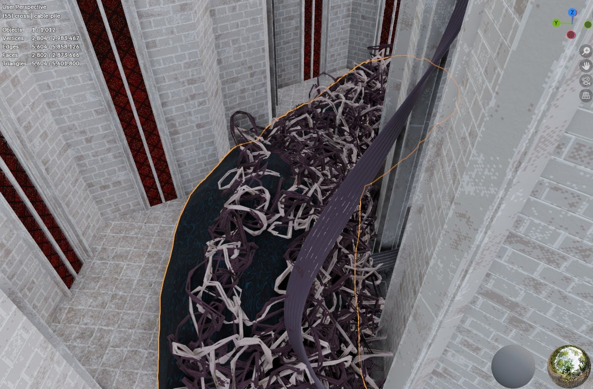
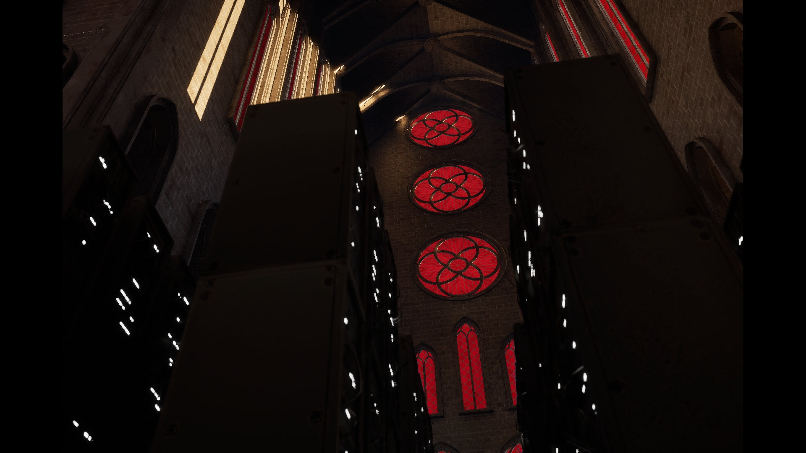
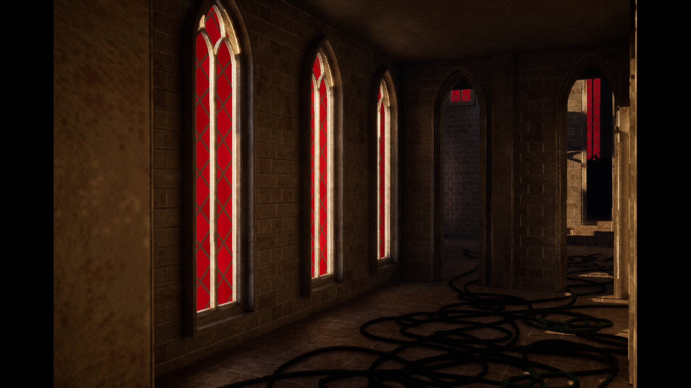

Parousia

Created in response to the zeal surrounding artificial general intelligence (AGI), Parousia is an explorable virtual environment set in a Gothic church converted into a data center. Server racks replace the pews, cables flood the floor, and the air hums with fans and machine beeps. The building runs a single altar: a disheveled cross of CRT televisions, enshrined by a mass of wires, showing images of Christ generated by AI in real time. Parousia serves as a cultural observation on how alike the thirst for a savior has become across faith and technology. Some await AGI as a second coming, while others preach it will end the world. Meanwhile, people turn to chatbots for confession. Some, in a state of psychosis, venerate them as prophets, their delusions affirmed by a machine that feeds them what they want to hear. Where does faith end and delusion begin? Jaafar and Spinelli draw on our long cultural fascination with machine consciousness and question why we look for divinity in what we build. Visitors are invited to wander among the servers and contemplate what they are waiting for.
Tools
Unreal Engine 5, Blender, Maya, Python, ComfyUI
Team Members
Natasha Spinelli: Design and 3D modelling of the cross centerpiece
Process Details
AI was only used for the imagery on the cross altarpiece. No other art assets were made with AI. Since the piece is a reflection on AI and the zeitgeist around it, we wanted to use it in a critical way, as part of the message itself.
The images are generated live on the machine running the piece. A Python script runs Stable Diffusion 1.5 locally and sends it a new job every few seconds, building a fresh prompt from word banks (gothic forms, machinery, decay, palette) and randomizing the seed, denoise strength, and reference image.
Each image is an image-to-image pass over a fixed crucifixion composition, so the figure stays lined up with the screens while the style drifts. The references are earlier outputs of the piece, so it keeps feeding on its own images.

Unreal reloads the newest image every eight seconds and swaps it into the screen material. If generation stalls, the piece falls back to a bank of images it made earlier.
The cross is made of dozens of TVs that together show one image. I separated the screens from the TV bodies, joined only the screens into one mesh, and projected UVs across it, so a single texture covers the whole cross.
That way, changing the image is one texture swap in one Unreal material. It made the screens easy to animate and lets the AI pipeline update the whole altar at once.

I wanted cables flooding the floor of the church, but modelling them all in 3D was too heavy for both file size and performance. I needed something lighter that also fit the retro look.
I used shell texturing: I duplicated the floor, made it transparent, and painted the wires on it, then used an array modifier to stack it 10 times with very short spacing. The layers fake 3D volume while staying a few flat planes. Notice how the stairs became a straight slope on the cable mesh.
For the pile behind the altar, I wanted real depth so the cables coming down from the cross wouldn’t just clip into the ground. I sculpted a mound, scattered cables on it with a geometry nodes setup, then decimated them on top and in front to keep it light.

Cable generation based on Joey Carlino’s geometry nodes tutorial.

